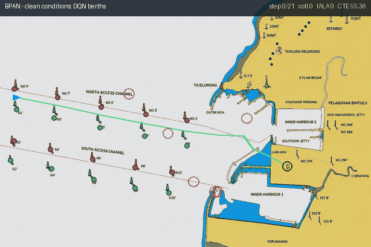
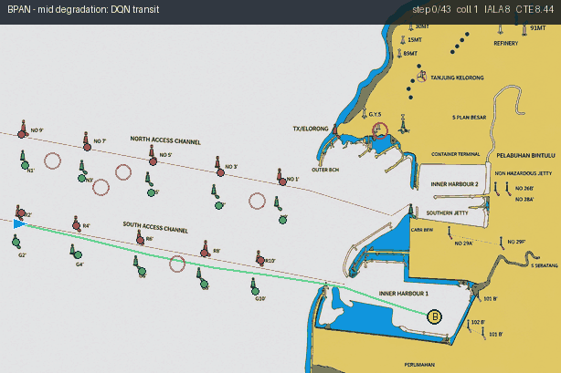
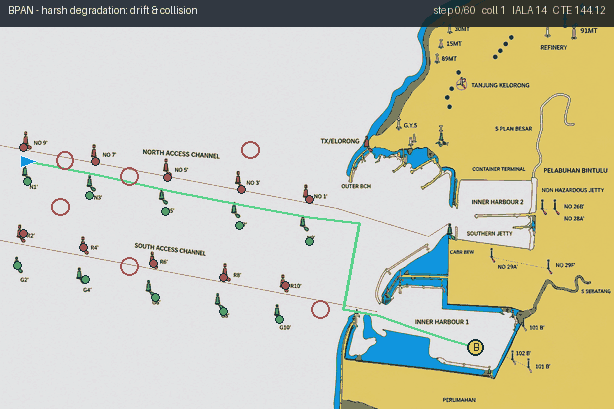
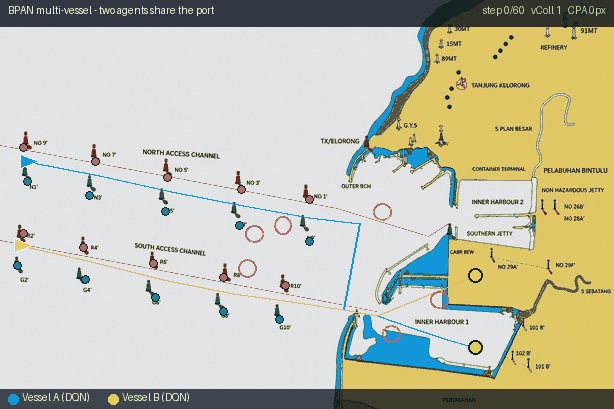
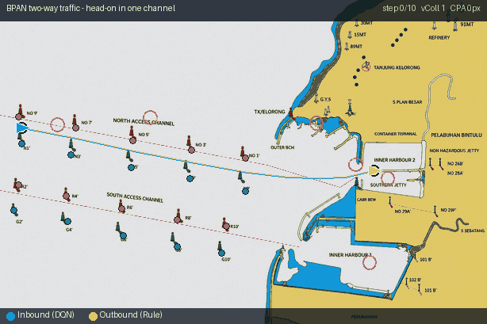

Clean conditions. The trained DQN vessel tracks the planned channel over the real Bintulu chart and berths at the harbour (no sensor noise or packet-loss).

Mid degradation. With moderate sensor noise and packet-loss the realised track drifts from the buoyed centreline but the vessel still completes the transit.

Harsh degradation. Under heavy noise + packet-loss the track drifts across channel markers (IALA violations) and grazes an obstacle (collision) — the visual counterpart of the quantitative safety collapse.

Multi-vessel (ext. d). Two independent vessels share the port, each on its own mission. The link between them turns amber on a near-miss and red on a collision; this is the inter-vessel interaction whose pairing dominates the §4.6 statistics.

Two-way traffic (ext. e). An inbound (learned) and an outbound (rule-based) vessel share one access channel in opposing directions. On a single surveyed centreline the head-on meeting is structural — the collision the §4.7 null result quantifies.